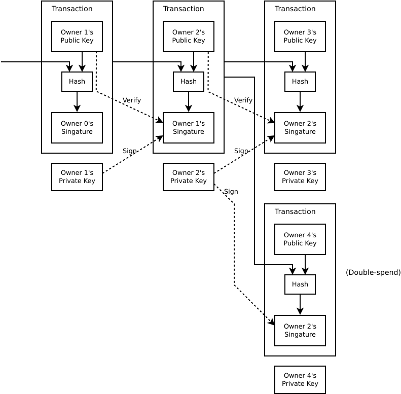
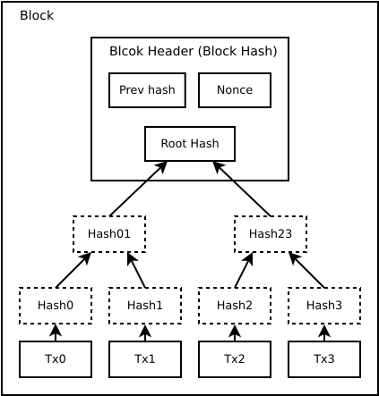

Bitcoin
Transactions
We define an electronic coin as a chain of digital signatures. To prevent double-spend, the earlist transaction is the one that counts. The only way to confirm the absence of a transaction is to be aware of all transactions.

Bitcoin As A State Transition System
The ledger of a cryptocurrency such as Bitcoin can be thought of as a state transition system. The “state” in Bitcoin is the collection of all coins (technically, “unspent transaction outputs” or UTXO) that have been mined and not yet spent, with each UTXO having a denomination and an owner (defined by a 20-byte address which is essentially a cryptographic public key). A transaction contains one or more inputs, with each input containing a reference to an existing UTXO and a cryptographic signature produced by the private key associated with the owner’s address, and one or more outputs, with each output containing a new UTXO to be added to the state. The state transition function APPLY(S,TX) -> S' or ERROR can be defined roughly as follows:
- For each input in TX:
- If the referenced UTXO is not in S, return an error.
- If the provided signature does not match the owner of the UTXO, return an error.
- If the sum of the denominations of all input UTXO is less than the sum of the denominations of all output UTXO, return an error.
- Return S’ with all input UTXO removed and all output UTXO added.
Proof-of-Work

Bitcoin’s decentralized consensus process requires nodes in the network to continuously attempt to produce packages of transactions called “blocks”. The network is intended to produce roughly one block every ten minutes.
The algorithm for checking if a block is valid, expressed in this paradigm, is as follows:
- Check if the previous block referenced by the block exists and is valid.
- Check that the timestamp of the block is greater than that of the previous blockfn. 2 and less than 2 hours into the future
- Check that the proof of work on the block is valid.
- Let
S[0]be the state at the end of the previous block. - Suppose TX is the block’s transaction list with n transactions. For all i in 0…n-1, set
S[i+1] = APPLY( S[i], TX[i] )If any application returns an error, exit and return false. - Return true, and register
S[n]as the state at the end of this block.
Essentially, each transaction in the block must provide a valid state transition from what was the canonical state before the transaction was executed to some new state. Note that the state is not encoded in the block in any way; it is purely an abstraction to be remembered by the validating node and can only be (securely) computed for any block by starting from the genesis state and sequentially applying every transaction in every block. Additionally, note that the order in which the miner includes transactions into the block matters.
The proof-of-work involves scanning for a value that when hashed, such as with SHA-256, the hash begins with a number of zero bits. The average work required is exponential in the number of zero bits required and can be verified by executing a single hash. We implement the proof-of-work by incrementing a nonce in the block until a value is found that gives the block’s hash the required zero bits. Once the CPU effort has been expended to make it satisfy the proof-of-work, the block cannot be changed without redoing the work. As later blocks are chained after it, the work to change the block would include redoing all the blocks after it.
To compensate for increasing hardware speed and varying interest in running nodes over time, the proof-of-work difficulty is determined by a moving average targeting an average number of blocks per hour. If they’re generated too fast, the difficulty increases.
Incentive
Whenever a miner mines a block, it includes a special transaction called a coinbase transaction. This transaction has no inputs and creates X bitcoins equal to the current block reward which are awarded to the miner of the block. Additionally, if any transaction has a higher total denomination in its inputs than in its outputs, the difference also goes to the miner as a “transaction fee”.
Merkle Tree
Transactions are hashed in a Merkle Tree, with only the root included in the block’s hash.

Resources:
https://bitcoin.org/bitcoin.pdf
https://github.com/ethereum/wiki/wiki/White-Paper#bitcoin-as-a-state-transition-system
https://github.com/paritytech/parity-bitcoin
https://github.com/bitcoinbook/bitcoinbook